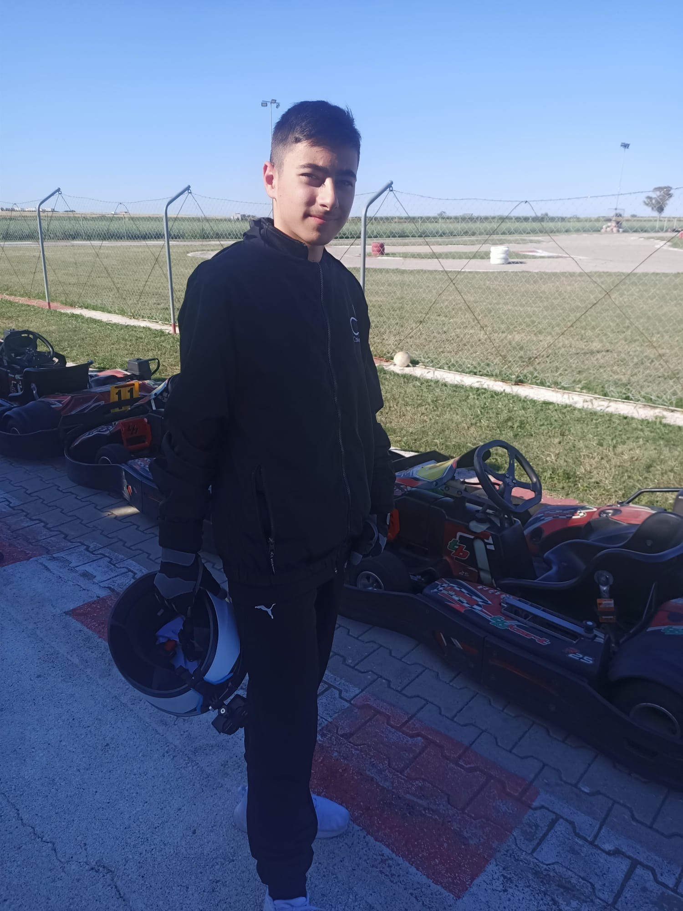
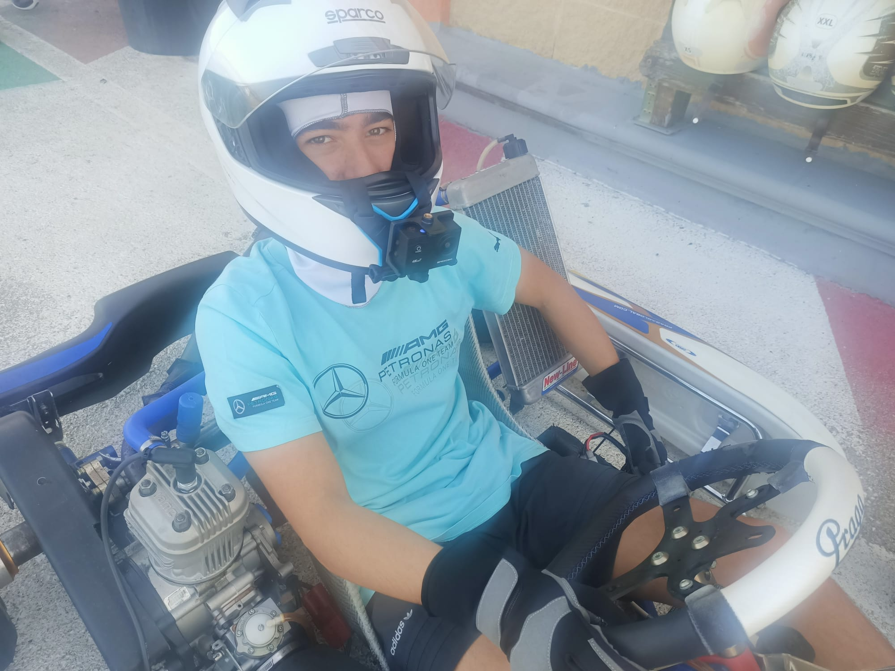

Gabriele – Il mio sogno tra kart e Formula 1
Ciao, mi chiamo Gabriele, ho 14 anni e ho una passione smisurata per i motori, la velocità e la competizione. Fin da piccolo, sogno un giorno di arrivare a correre in Formula 1, e oggi sto lavorando duramente per trasformare quel sogno in realtà.
Corro con un kart a marce 125cc Praga, su piste tecniche e impegnative dove ogni curva è una sfida e ogni giro è una lezione. La passione per la guida, la tecnica, l’adrenalina della competizione e il desiderio di crescere mi spingono ogni giorno ad allenarmi con determinazione.
 Nel karting sto imparando le basi fondamentali che ogni pilota deve avere: controllo, strategia, forza mentale. Ogni weekend in pista è un piccolo passo verso l'obiettivo più grande: indossare un casco da F1, sentire l'accensione del motore e partire da una griglia professionale. So che la strada è lunga, ma ho la motivazione e il talento per percorrerla.
Alla ricerca di sponsor
Per continuare questo percorso ho bisogno del supporto di chi crede nei giovani talenti. Sto cercando sponsor che possano aiutarmi a crescere nel karting, partecipare a più gare, e accedere a strutture e team professionali.
Se vuoi investire su un giovane pilota determinato, motivato e ambizioso, contattami o clicca qui sotto per vedere la mia presentazione completa per gli sponsor:
📄 Presentazione Sponsorizzazione – Gabriele
Il tuo aiuto può fare la differenza. Non è solo una sponsorizzazione: è una parte del mio viaggio verso il futuro.
← Torna alla Home